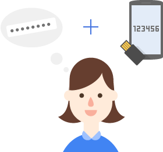

امـنـیـت رایـانـه
برای فعالان مدنی و روزنامهنگاران
{ تایید دو مرحلهای }
ایرانسک
IranSecurity
IranSec
IranSec2
این محتوا با و تحت گواهی منتشر میشود (بیشتر بخوانید)
تایید دو مرحلهای
راهی برای امنتر کردن شناسهها
بهار ۱۴۰۲چرا تایید دو مرحلهای؟
- تایید دو مرحلهای (2FA) یک لایۀ امنیتی اضافی برای جلوگیری از سوء استفادۀ هکرها از ضعفهای امنیتی است. اگر رمز شما به هر دلیلی (سهلانگاری، ساده بودن، هک شدن) فاش شود، هکرها میتوانند بهراحتی وارد شناسۀ شما شده و به اطلاعاتتان دسترسی داشته باشند.
- با فعال کردن ورود دو مرحلهای، اگر هکر رمز شناسۀ شما را داشته باشد، برای ورود به چیزی بیش از رمز نیاز دارد: یک کد موقت که طول عمری بیش از چند دقیقه ندارد. معمولا این کد از شیوهای غیر از آنچه که هکر امکان دسترسی راحتتر به آن دارد (مثل ایمیل) تولید میشود. شیوههایی شبیه به پیامک، نرمافزاری خاص که به اینترنت متصل نیست یا استفاده از ابزارهای سختافزاری.
برخی از شیوههای معمول تایید دو مرحلهای شامل استفاده از کلید امنیتی، دریافت کد موقت از طریق پیامک یا نرمافزار جانبی است.
چند نکتۀ مهم
- برخی از وبسایتها برای تایید دو مرحلهای به شماره تلفن شما نیاز دارند. از شماره تلفن (و حتی گوشی) معمول خود استفاده نکنید؛ بهتر است شمارۀ ناشناسی داشته باشید (به اسم شما ثبت نشده باشد) و از آن استفاده کنید. استفاده از شماره تلفن دوستان و بستگان معتمد در شهر یا کشور دیگر گزینۀ مناسبیتری است. فراموش نکنید که این خط نباید منقضی شود یا از بین برود.
- برخی از وبسایتها پس از فعالکردن تایید دو مرحلهای تعدادی کد موقت به شما میدهند؛ آنها را در جایی امن نگه دارید. بهتر است بهصورت دیجیتال نباشد.
- درصورتی که امنیت دستگاه شما کم باشد، دستگاه شما به صورت فیزیکی دست هکر باشد یا کسی به دستگاه شما دسترسی داشته باشد، امکان دور زدن تایید دومرحلهای وجود دارد. برای جلوگیری از این اتفاق، امنیت عمومی و فیزیکی دستگاه خود را حفظ کنید.
- هکرها از شیوههای مختلفی مثل فیشینگ (صفحۀ جعلی)، شنود پیامک یا روشهای پیچیدهتر برای بهدست آوردن کد تایید دو مرحلهای استفاده میکنند. در هنگام ورود کد به آدرس صفحه دقت کنید.
یکی از شیوههای معمول هک تایید دو مرحلهای در زمان دسترسی به تلفن قربانی، خواندن کد تایید از روی صفحۀ گوشی است. گوشی خود را به امان خدا ول نکنید و حتماً امکان نمایش محتوا در صفحۀ قفل را غیر فعال کنید.
چندتا از ابزارهایی که میتوان برای فعالسازی تائید دومرحلهای از آنها استفاده کرد.
| Google Authenticator |
Twilio Authy |
Bitwarden |
|---|---|---|
| امنیت بالاتر | پشتیبانگیری | |
| نصب روی چند دستگاه | ||
|
|
|
تایید دو مرحلهای گوگل
وارد حساب گوگل خود شوید. روی پروفایل خود کلیک کنید. دکمه Manage your google account را بزنید.
وارد بخش Security شوید.
صفحه را به پایین اسکرول کنید. در بخش How to sign in to google، روی Two-step verification کلیک کنید.
دکمه Get started را بزنید.
روی show more options کلیک کنید. روی google prompt کلیک کنید.
برای استفاده از این ویژگی، لازم است که حتما حسابتان روی یک دستگاه موبایل فعال باشد. دکمه continue را بزنید. روی use another backup option کلیک کنید.
کدهای بکاپ شما برای زمانی که به دستگاهتان دسترسی ندارید برایتان نمایش داده میشوند. آنها را در جایی (ترجیحا غیردیجیتال) ذخیره کنید. همچنین میتوانید از گزینه Print برای ذخیره بهصورت فایل Pdf و از download برای ذخیره با فرمت txt استفاده کنید. دکمه next را بزنید. روی turn on کلیک کنید.
وارد بخش authenticator app شوید.
روی دکمه set up authenticator + بزنید. با گوشی خود وارد نرمافزار google authenticator شوید. روی + کلیک کنید.
گزینه scan a QR code را انتخاب کنید. کد نمایش داده شده در صفحه را با گوشی خود اسکن کنید. حساب گوگل بهظور خودکار به نرمافزار شما اضافه میشود. دکمه next را بزنید.
کدی که در نرمافزار جلوی نام حسابتان نوشته شده را در این بخش وارد کنید. روی verify کلیک کنید. ورود دومرحلهای حساب گوگل برای شما فعال شد.
تایید دو مرحلهای توییتر

تابستان ۱۴۰۲
وارد نرمافزار توییتر شوید. روی عکس پروفایل خود کلیک کنید. روی Settings and support بزنید. وارد settings and privacy شوید. روی security and account access کلیک کنید.
وارد security شوید. روی two-factor authentication کلیک کنید. authentication app را بزنید. رمز شناسه خود را وارد کنید. روی confirm بزنید.
روی Get started کلیک کنید. روی ?can't scan the QR code بزنید. کد نمایش دادهشده روی صفحه را بردارید.
وارد نرمافزار Authenticator شوید و روی دکمه + بزنید. Enter a setup key را انتخاب کنید. شناسه توییتر و کدی که از توییتر برداشتید را در این قسمت وارد کنید. شناسه شما ثبت شد. حالا عدد جلوی شناسهتان را بردارید و به توییتر برگردید.
next را بزنید. کد را در قسمت مشخص شده وارد کنید و confirm را بزنید. روی get backup code کلیک کنید. کدهای نمایش داده شده در صفحه را در جایی (نرجیحا غیر دیجیتال) ذخیره کنید تا زمانی که دسترسی به دستگاهتان ندارید از آنها استفاده کنید.
تایید دو مرحلهای اینستاگرام
تابستان ۱۴۰۲
وارد نرمافزار اینستاگرام شوید. در صفحۀ پروفایل اینستاگرام، با کلیک بر روی منوی همبرگری (سه خط افقی بالا) منوی امکانات اینستاگرام برای شما نمایش داده میشود. با کلیک روی Setting and privacy، وارد تنظیمات اینستاگرام میشوید.
قبل از انجام مراحل لازم است که یکی از نرمافزارهای احراز هویت (مثل Duo یا Google Authenticator) را نصب کنید. در اینجا، ما با google authenticator مراحل را آموزش دادهایم. در تنظیمات، وارد Accounts center شده و روی Password and security کلیک کنید. وارد two-factor authentication شوید.
شناسه خود را انتخاب کنید، روش ورود دومرحلهای (امنترین روش استفاده از نرمافزار مخصوص آن است) را انتخاب کنید و دکمه Next را بزنید. اگر نرمافزار روی دستگاهی که در دست دارید فعال است، روی Copy key کلیک کنید تا کلید شما کپی شود؛ و اگر در دستگاه دیگری قرار دارد، روی View barcode/QR code کلید کنید تا کد نمایش داده شده را با دستگاه دیگرتان اسکن کنید.
وارد نرمافزار authenticator خود شوید و روی دکمه + کلیک کنید. روش دریافت کد را انتخاب کنید. دو راه دارید؛
کلیک روی Scan a QR code: اسکن کد QR نمایش داده شده روی صفحۀ دستگاه دیگر،
کلیک روی Enter a setup key: وارد کردن شناسه و چسباندن کدی که در کلیپبوردتان کپی شده است.
Continue را بزنید. شناسۀ شما ثبت شد. حالا شناسه شما به authenticator اضافه شدهاست. روی کد شش رقمی جلوی آن کلیک کنید تا کپی شود و به اینستاگرام بازگردید.
کد را در قسمت مربوطه وارد کنید و Next را بزنید. پیش از تایید نهایی، میتوانید با زدن روی backup codes، کدهای پشتیبانگیری خود را مشاهده کنید. این کدها زمانی که به هر دلیلی نرمافزار ورود دومرحلهای را در دسترس ندارید و میخواهید وارد حساب خود شوید، بهکار میآیند. ترجیحا در جایی غیردیجیتالی آنها را ثبت کنید. درنهایت، با زدن دکمه Done، ورود دومرحلهای برای شما فعال میشود.
در صفحهای که به آن منتقل میشوید، وارد Additional methods شوید. در اینجا میتوانید تعیین کنید که درصورت ورود دستگاهی ناشناس به شناسه شما، اینستاگرام از شما اجازه بگیرد یا خیر.
تایید دو مرحلهای فیسبوک
تابستان ۱۴۰۲
وارد نرمافزار فیسبوک شوید. برای ورود به تنظیمات فیسبوک، روی منوی همبرگری (سه خط افقی گوشۀ راست-بالا) کلیک کنید و سپس روی چرخدنده بزنید.
در تنظیمات وارد Password and security شوید. در بخش Use two-factor authentication روش مناسب را انتخاب کرده و دکمۀ Continue را بزنید. کد نمایش داده شده در صفحه را جایی (ترجیحا غیردیجیتال) ذخیره کنید که اگر به هر دلیلی ارتباطتان با نرم افزار ورود دومرحله ای از بین رفت دوباره بتوانید آن را ثبت کنید. اگر میخواهید ورود دومرحله ای را روی گوشی خودتان فعال کنید، روی Set up on same device کلیک کنید. بهطور خودکار به نرمافزار ورود دو مرحلهای(مثلا Authenticator Google) منتقل میشوید. Okay را بزنید. شناسۀ شما ثبت شد.
اگر میخواهید ورود دو مرحلهای را روی دستگاه دیگری فعال کنید، با دستگاه دوم وارد نرمافزار ورود دومرحلهای شده و روی دکمۀ add( + ) زنید. برای ثبت شناسه دو راه دارید؛
کلیک روی Scan a QR code و اسکن کد QR نمایش داده شده روی صفحۀ فیسبوک،
کلیک روی Enter a setup key و وارد کردن شناسه و کد نماش داده شده در صفحۀ فیسبوک.
Continue را بزنید. شناسۀ شما ثبت شد.
در نرمافزار ورود دومرحلهای، کد نمایش داده شده برای شناسهتان را بردارید و در محل مشخص شده در فیسبوکتان وارد کنید. رمز اصلی شناسۀ فیسبوکتان را وارد کنید و CONTINUE را بزنید. ورود دومرحلهای برای شما فعال شد. کدهای بکاپ شما برای زمانی که به دستگاهتان دسترسی ندارید برایتان نمایش داده میشوند. آنها را در جایی (ترجیحا غیردیجیتال) ذخیره کنید.
اگر با یک دستگاه و رمز دومرحلهای وارد شناسه شوید، آن دستگاه بهعنوان دستگاه مورد اعتماد شناخته میشود و برای دفعات بعدی میتواند بدون رمز دومرحلهای وارد شود. به Password and security برگردید. در Authorized logins میتوانید لیست دستگاههای مورد اعتماد را دیده و دستگاههایی که نمیخواهید را حذف کنید.
برای اینکه اعلان ورود به شناسهتان از یک دستگاه ناآشنا (که قبلا از آن استفاده نکردهاید) را دریافت کنید، به Password and security برگردید و در بخش نشان داده شده در تصویر، روش دلخواهتان برای دریافت اعلان را مشخص کنید.
نیاز به کمک دارید؟
پرسشهای خود را با ما در میان بگذارید. support@iransec.org t.me/IranSec_Botحق مؤلف و تشکر
ااین نوشته بهواسطه تجربۀ چندساله در ارائه مشاورۀ امنیتی به سازمانها، کنشگران مدنی، روزنامهنگاران و شهروندان تهیه شده است. هرچند که تمام تلاشمان را کردهایم که متن حاضر بهروز و بینقص باشد، اما امکان ایراد وجود دارد. پس با آغوش باز پذیرای نقدها و پیشنهادها شما هستیم. لازم است یادآوری کنم که این جزوهی امنیتی با گواهی کریتو کامنز (قابل استفادهی غیرتجاری، تخصیص و سهم یکسان) منتشر شده است. به حتم برای هر شکل از استفادهی تجاری از این مجموعه نیاز به کسب اجازه است.
در این پروژۀ آموزشی از محتوای دیگران با گواهی قابلانتشار و تغییر استفاده شده است. از آن جمله میتوان به ارائهگر reveal.js، قلمهای لالهزار و وزیر و بی-یکان، شکلکهای ion و awesome و flat icons استفاده شده. در هر جای پروژه که عکسی استفاده شده منبع آن ذکر شده است. اگر منبعی از قلم افتاده است خوشحال میشویم که آن را گوشزد کنید.